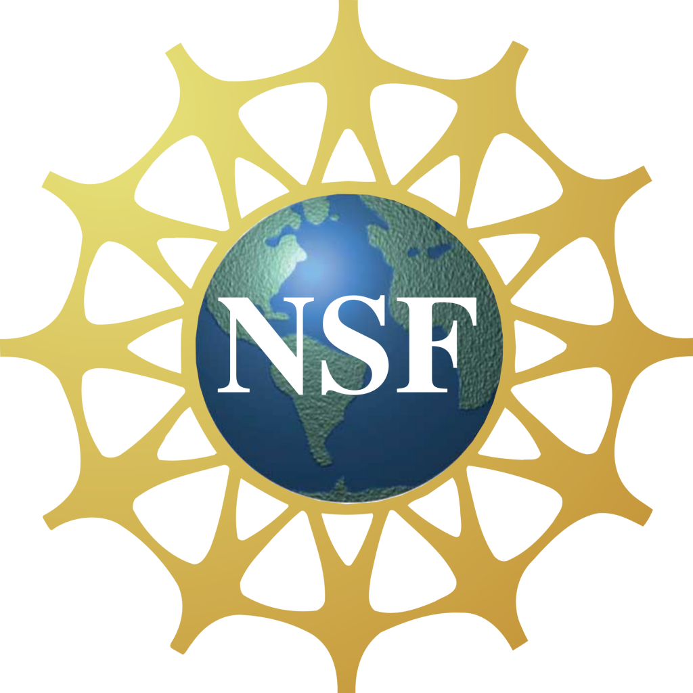

Reproducibility at NYU
Reproducibility of scientific research is imperative: it helps researchers verify results, and it allows others to build on them, advancing the global body of scientific knowledge. The standard of reproducible results long held in the natural sciences has not been applied to computational science, where researchers have to rely on data described in papers, or secondary data if it is supplied.
Truthfully, this is because computational reproducibility is an arduous process: all data (including inputs, software libraries, and dependencies), original computing environment, and a compendium of the experiment's steps must be packaged together in order to successfully recreate computational experiments. Doing this manually is not only difficult, but subject to a large margin of human error -- not to mention, if a researcher didn't plan for tracking these data at the beginning of the experiment, it is nigh on impossible to reproduce it at the end.
Not only is it burdensome for the original researcher, but also for other researchers hoping to review the work. Even with all the above data in their hands, there may be no reference for how to reproduce the experiment in terms of executing the code.
The Open Science and Reproducibility Working Group installation at NYU is developing a suite of tools and infrastructure that supports the process of sharing, testing and re-using scientific experiments and results by leveraging and extending the infrastructure provided by provenance-enabled scientific workflow systems. In particular, we're looking at assisting researchers in making streamlining their research process in order to make their data interoperable and reproducible. To accomplish this, the team is developing software designed to track an experiment's provenance and workflow in such a way that other researchers will be able to unpack it and run it on their own systems as simple as possible. The project explores three key research questions:
- How to package and publish compendia of scientific results that are reproducible and generalizable?
- What are appropriate algorithms and interfaces for exploring, comparing, re-using the results or potentially discovering better approaches for a given problem?
- How to aid reviewers to generate experiments that are most informative given a time/resource limit?
An expected result of this work is a software infrastructure that allows authors to create workflows that encode the computational processes that derive the results (including data used, configuration parameters set, and underlying software), publish and connect these to publications where the results are reported. Testers (or reviewers) can repeat and validate results, ask questions anonymously, and modify experimental conditions. Researchers, who want to build upon previous works, are able to search, reproduce, compare and analyze experiments and results. The infrastructure helps scientists in any discipline to construct, publish and share reproducible results.
This project is also affiliated with The Visualization and Data Analytics (ViDA) lab at NYU Polytechnic School of Engineering.
Funding
This project is sponsored by the following National Science Foundation awards:
|  |
|